Хватит сопли распускать!
Я решил встретиться лицом к лицу с Нуком. Потребую, чтобы он меня отпустил. Если откажет – вырублю его и сожгу дотла этот хуев лагерь. Однако, чего явно не ожидал – ответ от него.
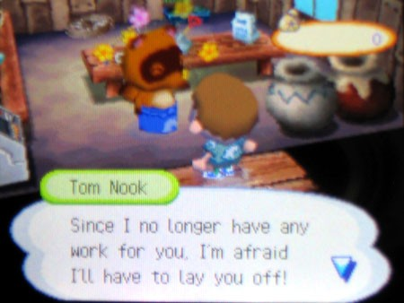
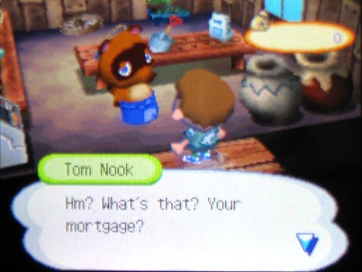
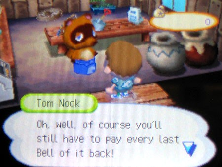
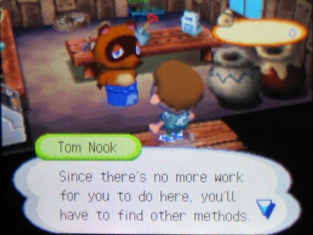
Он ведёт себя так, будто это была его идея, будто он оказывает мне услугу. Как будто всё, что мне нужно сделать, — это отдать долг, и он лично отвезёт меня домой. Я даже не хочу знать, каким образом я могу заработать денег по-другому. В типичной для Нука манере (которая уже в печенках сидит) он продолжает вешать мне лапшу на уши. Он хочет дать мне понять, что он всё ещё начальник, что он всё ещё контролирует ситуацию. Мне плевать. Я больше не работаю на Нука. Я сваливаю.
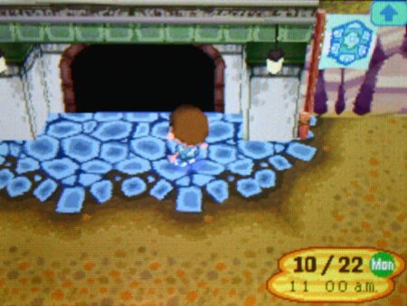
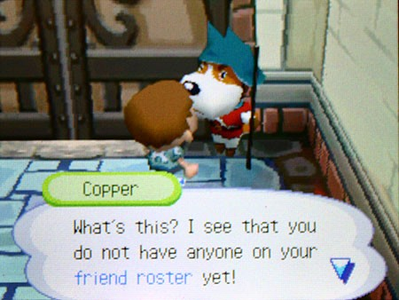
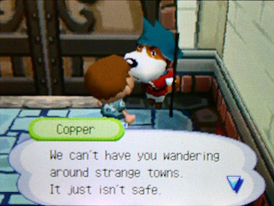
Список друзей? Ради моей же безопасности?! Сын собаки… да, я могу спокойно пойти… никуда. Я уже собираюсь сказать ему, куда именно он может пойти, но запинаюсь на полуслове. Почему-то я не могу вспомнить, где живу. Я не помню своего адреса. Я здесь уже около месяца (а может, и больше?). Но я всё ещё должен помнить…
Может, я смогу обратиться к другому.
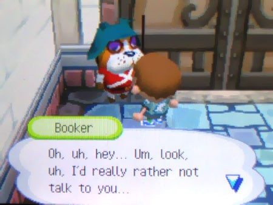
В пизду! Иду обратно к Нуку и говорю всё как есть.
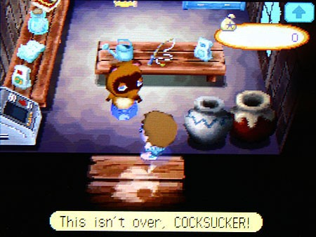
Он насмехается надо мной, даёт мне лопату и приказывает копать, где не попадя. Этот самодовольный сукин сын — ни один суд на земле не осудил бы меня, если бы я прямо здесь выбил из него всё дерьмо его же лопатой, но правда в том, что мне страшно. Я всего лишь ребёнок. Какая бы ни была у меня ненависть к Нуку, мысль о том, чтобы кого-то убить, вызывает у меня тошноту. Вишенка на торте — это не помогло бы мне сбежать. Я не смогу перебить весь городок.
Нужно взять себя в руки.
- 1 Мне нужен план, как пройти мимо сторожевых псов.
- 2 Нужно запастись едой, чтобы не сдохнуть с голоду, когда я отсюда выберусь — один бог знает, куда они меня завезли.
- 3 Мне нужно стать невидимым. В этой рабочей форме я буду торчать как огромная вывеска с надписью «ПОЙМАЙ МЕНЯ». И хуже всего то, что после всего, что случилось, Нук будет ждать, что я попытаюсь сбежать.
- 4 Нужно дождаться подходящего момента.
Но сначала мне нужно заработать денег и дать ситуации устаканиться. Возможно, лучший план — делать вид, что я внимательно слушаю, будто меня действительно волнует, как расплатиться за моё картонное поместье. Но как мне его выплатить?
Нук говорит, что купит почти всё. Я не спрашиваю зачем.
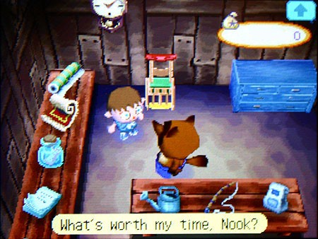
Какой ответ последовал? Кости динозавра.
Что? Он что, просто издевается надо мной, что ли? Говорит: иди поговори с Блейзерсом, с тем подонком, который заведует лагерным музеем. Я плетусь в музей, чтобы понять, что за хренотень он там придумал.
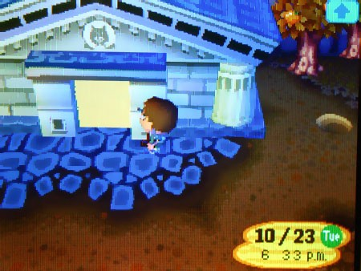
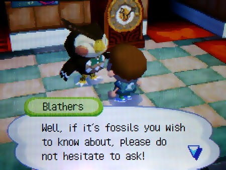
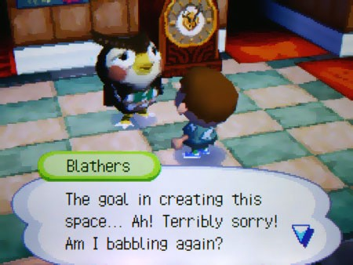
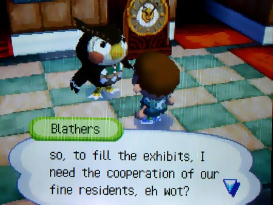
Пока я слушал, как сова несёт какую-то околесицу, я не переставал думать: какого хрена кости динозавров могут быть в плоском поле на берегу? Что вообще здесь было до того, как этот лагерь построили? И, кстати, кому вообще взбрело в голову строить музей, в котором пусто? В ответ — только тихое похрапывание. Совы, блядь, не храпят.
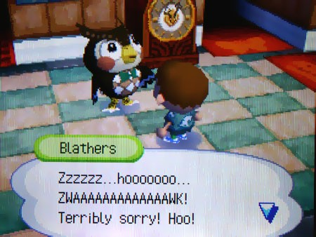
Я начинаю копать где попало. Теперь я понимаю, почему Нук подумал, что будет уморительно предложить мне копать себе путь на свободу. Всего в футе под верхним слоем земли начинается сплошной ёбаный известняк — и глубже я не пролезу. Как я вообще должен что-то здесь найти?
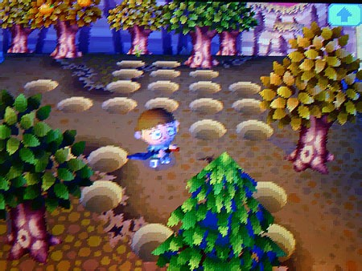
Прошло несколько часов. Я голоден, валюсь с ног и ненавижу себя за то, что опять поверил Нуку. Собираюсь забить на это и идти умываться к водопаду — и тут случается странное. Лопата на что-то натыкается.
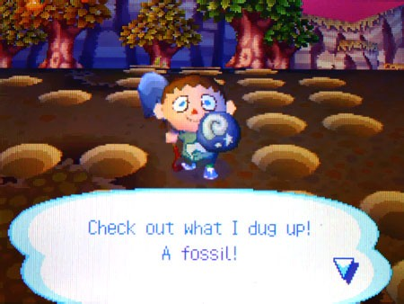
Неужели это действительно оно? Сложно понять — сплошная грязь и какая-то размытая форма. На закате я бегом тащусь обратно в музей — покажу этому сонному чудику.
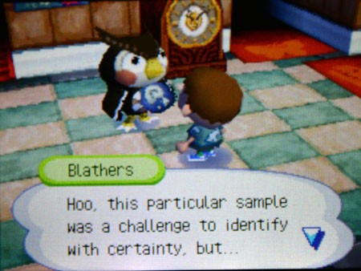
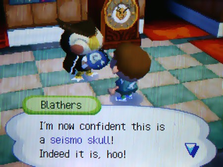
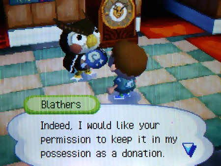
Выглядит… вроде бы подлинно, но я настроен скептически. Этот жадный мудак, похоже, ожидает, что я просто пожертвую её его пустому храму несостоявшихся амбиций; ему явно поебать, что я грязный, голодный и без гроша в кармане. Я шлю его нахер — мне надо обжулить кое-какого жуленота. Нук уже закрыт на сегодня, но завтра я сделаю первый шаг на пути отсюда.
8:00 РОВНО.
Лечу прямо к Нуку.
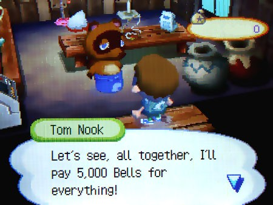
Я даже слегка удивился, когда Нук согласился заплатить мне за окаменелость, но удивление быстро сменилось злостью, когда узнал, что он собирается платить мне «динями» — своей собственной вымышленной валютой. Это не настоящие деньги, а просто листок с дыркой от дырокола. Бесит, как он продолжает наёбывать меня при первой возможности, с этой его самодовольной рожей, но я стараюсь сохранять спокойствие. Мне кажется, он получает истинное удовольствие, видя меня расстроенным. Я забираю его «деньги» и ухожу.
Сначала я скептически отнёсся к решению Нука перестать загружать меня работой, но со временем я начал понимать его хитрый замысел. Он заставлял меня принимать трудные решения: например, если я продаю ему апельсины, я остаюсь голодным, но иначе мне никогда не выплатить долг. То же правило действует почти на всё в этом лагере: каждый день я вынужден выбирать между работой и голодом.
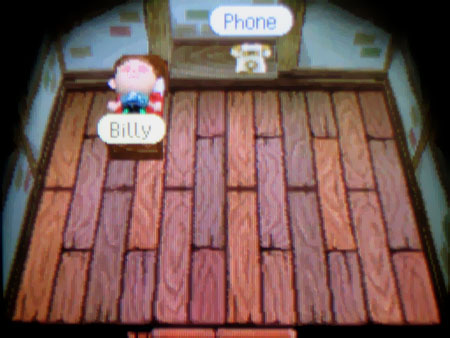
Я «свободен», но это ничего не изменило. Есть только одно, чего я не понимаю: зачем я ему нужен? Зачем он держит меня здесь? Ненавижу этого сукина сына.
Следующие недели проходят однообразно: я копаю ископаемые, тащу их к сове, а потом продаю Нуку за его «кэш». Я даже попытался подделать эту чушь, но он мгновенно вычислял подделку. В наказание он не разговаривал со мной целую неделю.
Потом я купил удочку. Не помешало бы научиться ловить рыбу. Апельсины уже не спасают, а от постоянной работы у меня начинает кружиться голова. Но хуже всего то, что они мне уже просто осточертели, блядь.
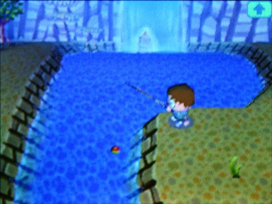
Меня бесило, что я начинаю привыкать к этой жизни. Я становился слишком смирным. Я ненавидел себя за то, что вынужден играть в эту больную игру Нука, чтобы накопить на побег. Но я уже начинал видеть конец этого туннеля.
Я накопил достаточно, чтобы купить у местной швеи «маскировочный костюм» — в нём я по ночам тайком ловил рыбу, чтобы запастись едой, не привлекая внимания вездесущих жителей. Я знал: что бы они ни увидели, об этом узнает Том. Я держал рыбу живой в своей хибаре, чтобы она не испортилась.
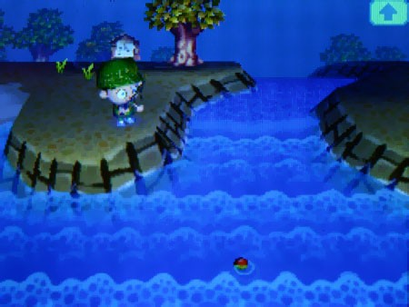
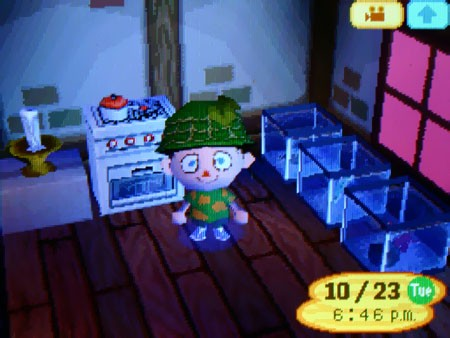
Портнихе я сказал, что это костюм на Хэллоуин, но на самом деле он нужен был мне, чтобы свалить из этой дыры. Днём я снова напяливал рабочую робу, чтобы никто не заподозрил неладное.
А в свободное время продолжал копать кости, таскать их сове, а потом сбагривать Нуку. Я уже сбился со счёта, сколько дней прошло, и именно это злило меня больше всего и заставляло продолжать делать то, что я до этого делал.
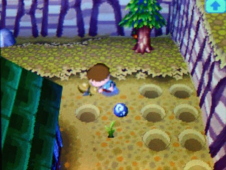
Я уже набил руку в поиске ископаемых. Заметил, что на месте их залегания земля всегда была чуть потрескавшейся.
Сначала это казалось странным: что за геологическое нечто заставляет кости вылезать из-под земли, будто они сами прут наверх? И почему каждый день они появлялись в новых местах, которых я раньше не замечал? Но потом я перестал заморачиваться и просто пользовался этой странностью, чтобы не торчать в этой пыльной дыре целыми днями.
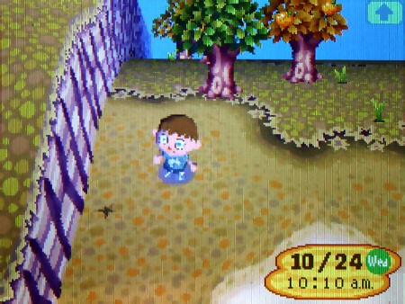
Сегодня было не как всегда. Я делал обход, когда заметил участок земли с необычно глубокой трещиной — гораздо более заметной, чем обычно. Я вонзил лопату, и вдруг меня пронзил ледяной ток, ударивший по руке, как молния. Я выронил инструмент, а дрожь постепенно угасла. Я смотрел на землю в оцепенении, будто из неё только что вырвалась рука, тянущаяся к моему черепу. Долгая тишина. Ничего. Я снова начал копать и почти сразу наткнулся на что-то, скрытое прямо под поверхностью.
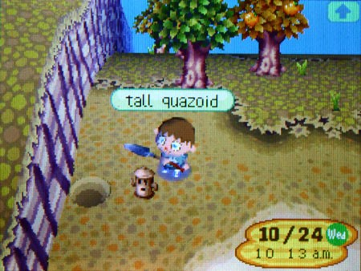
Высокий квазоид
Это была какая-то грубая… статуя? Вроде древнего идола… и я поймал себя на том, что говорю вслух: «Что это за хуйня?» — как вдруг она открыла свои ржавые глаза и впилась взглядом в мою душу. В мою голову вонзилось металлическое слово, и оно зазвенело там, как пустая консервная банка, которую пнули в стене заброшенного склада.
«Гироид»
По моему избитому мозгу ударило необъяснимое чувство — смесь животного страха и жгучего любопытства. Именно то чувство, из-за которого дебилы в ужастиках открывают светящиеся двери, хотя знают, что за ними псих с топором. Мне нужно было найти ещё такие. Я должен был понять, что это.
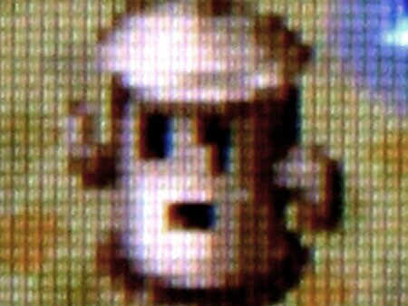
Я бы не стал его показывать тому филину.